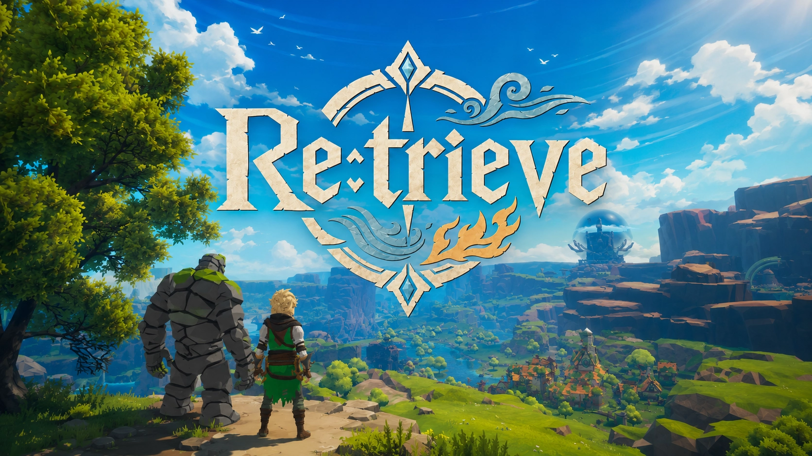
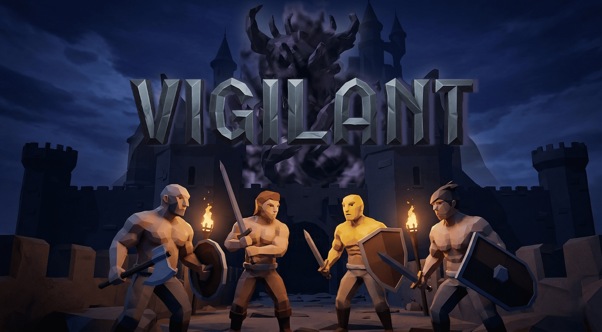
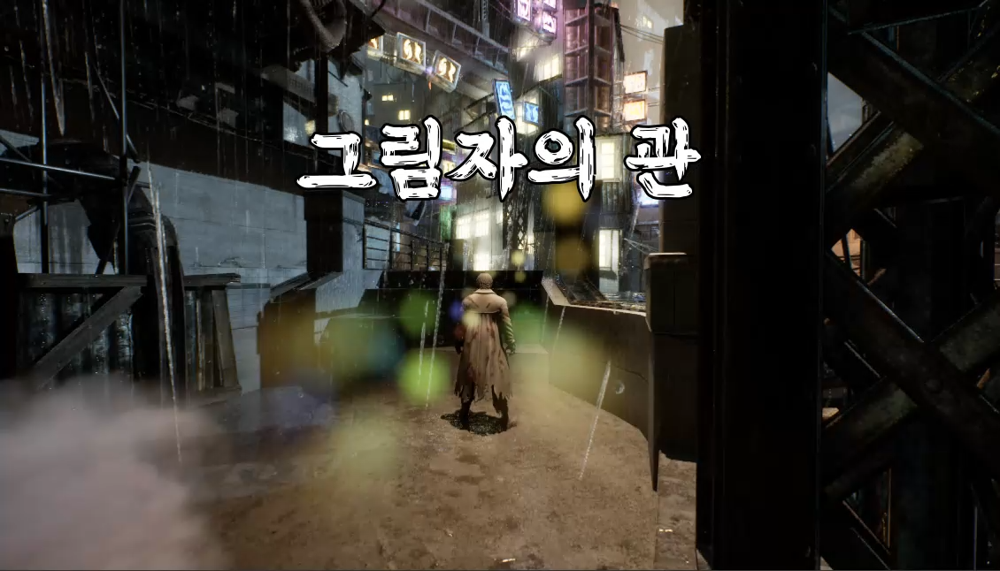
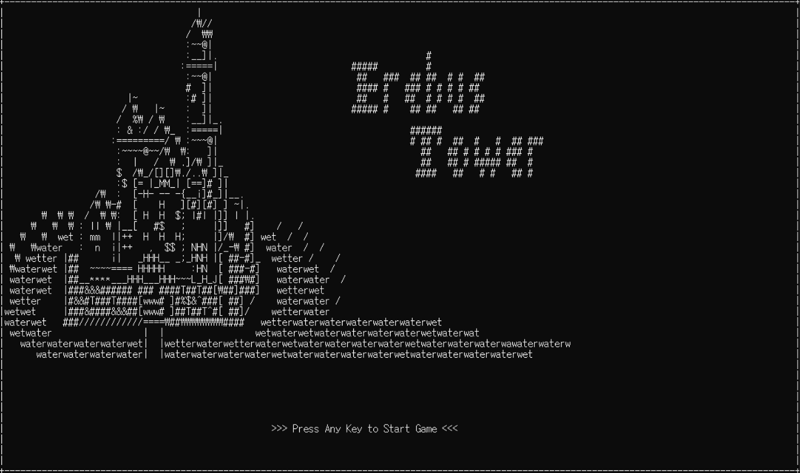
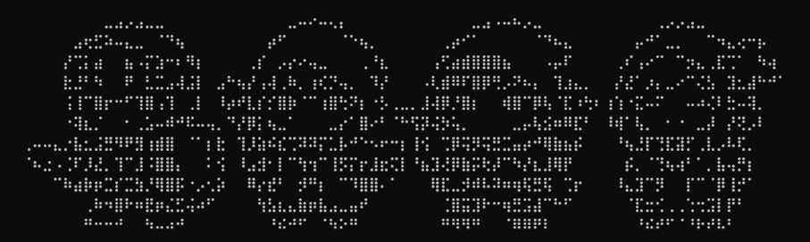
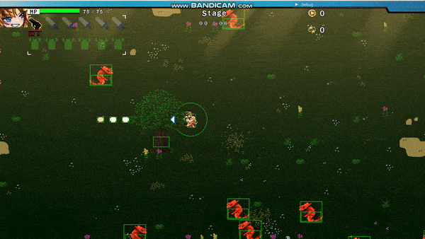
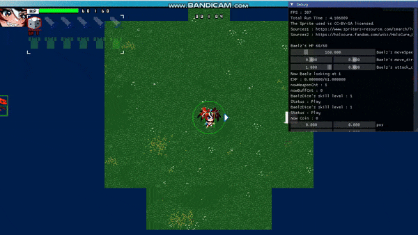

GAME CLIENT PROGRAMMER · 2026
문제를 추적하고
경계를 설계합니다
C++와 Unreal Engine을 기반으로 Enemy AI, 전투, 멀티플레이 미션을 구현했습니다. 증상에 머물지 않고 상태의 소유자, 데이터의 갱신 시점, 시스템 간 연결 경로를 확인합니다.
정찬호
github.com/jch1999 · velog.io/@elvpfhhrm
JC
C++와 Unreal Engine을 기반으로 Enemy AI, 전투, 멀티플레이 미션을 구현했습니다. 증상에 머물지 않고 상태의 소유자, 데이터의 갱신 시점, 시스템 간 연결 경로를 확인합니다.
정찬호
github.com/jch1999 · velog.io/@elvpfhhrm
DirectX 11 개인 프로젝트에서 게임 루프와 객체 수명, 갱신 순서를 다룬 뒤 Unreal 팀 프로젝트에서 BehaviorTree, StateTree, GAS, Replication으로 범위를 넓혔습니다. 기능을 추가할 때는 누가 상태를 소유하고 언제 값을 갱신하며 어디서 수명이 끝나는지부터 확인합니다.
원소를 흡수·해방하며 지역을 탐험하고 보스를 공략하는 오픈월드 액션 RPG입니다. Enemy가 공유하는 인지·상태 전달·행동 실행 흐름과 다수 Enemy의 포위·공격 조율을 담당했습니다.
| 담당 파트 | 문제 해결과 확장된 관점 |
|---|---|
| AIPerception·StateTree·GAS 공통 AISight·Damage 감지와 상태 전이 | GAS의 동적 태그가 StateTree에 자동 전달되지 않는 문제를 Evaluator의 InstanceData 갱신 경로로 해결했습니다. 판단과 실행의 경계를 분리해 팀원이 같은 기반 위에서 Enemy별 행동을 확장할 수 있게 했습니다. |
| 오브젝트 풀링 리스폰Spawn/Despawn Radius와 상태 초기화 | 주기적 거리 검사와 생성·삭제를 Collision 이벤트와 재사용 구조로 전환했습니다. 사망 타이머를 개체별로 분리하고 HP·AI·상태이상을 복구해 이전 교전 상태가 다음 조우에 남지 않게 했습니다. |
| 태그·데이터 기반 공격 다중화가디언 페이즈와 패턴 선택 | BasicAttack 전용 경로를 제거하고 공격 태그·거리·쿨다운·우선순위로 패턴을 고르도록 통합했습니다. StateTree는 유지한 채 데이터 교체만으로 페이즈별 공격 구성이 달라집니다. |
| Suspicious 인식 흐름AIPerception 기억과 현재 관측 분리 | MaxAge 동안 남는 Sight 자극을 현재 시야로 오인한 문제를 거리·LOS 재확인과 기억 초기화로 보완했습니다. |
| Poise 기반 보스 그로기패턴 파훼와 누적 피해의 결합 | Counter Window 외에도 누적 피해로 같은 Groggy 흐름에 진입하도록 구성했습니다. 페이즈 전환 타격이 새 Poise를 다시 깎는 경계 오류도 차단했습니다. |
| 포위 슬롯·AttackToken다수 Enemy 위치와 공격 참여 조율 | 360도 10개 슬롯으로 접근 위치를 분산하고 비용·예산형 AttackToken으로 동시 공격을 제한했습니다. 상태 평가는 가능 여부만 확인하고 실제 행동이 토큰을 소유하도록 책임을 나눴습니다. |

Hit·Staggered·Groggy 태그가 StateTree에 전달되지 않아 상태에 진입하지 않거나, 태그가 사라진 뒤에도 빠져나오지 못했습니다.
동적으로 변하는 상태 태그를 정적 매개변수처럼 전달하던 경로를 확인하고, Evaluator가 ASC의 태그를 Enemy별 InstanceData로 복사하도록 바꿨습니다.
Evaluator·StateTree는 판단, GAS Ability는 실행을 담당합니다. 개별 공격과 피격 반응은 Ability와 데이터로 분리되어 공통 판단 흐름을 흔들지 않습니다.
늑대와 불·물·바람 가디언을 직접 구현하며 기반을 확장했고, 팀원들도 같은 흐름 위에서 담당 Enemy의 행동과 공격 데이터를 구성했습니다.
빈 슬롯 중 점유 슬롯과의 간격이
가장 큰 위치를 우선 배정
CurrentAttackCost + RequestCost
<= AttackBudget
상태 평가: 획득 가능 여부 확인
공격 행동: Token 획득·반환RVO는 이동 중 충돌 회피에는 도움이 됐지만 접근 방향과 공격 순서는 정하지 못했습니다.
플레이어 주변을 10개 각도 슬롯으로 나누고 점유 슬롯과의 간격이 큰 위치를 우선 배정했습니다.
누가 공격권을 가졌는지 추적할 수 있도록 보유자를 기록하고 종료·중단·타깃 소실 경로에서 반환했습니다.
일반 Enemy와 보스의 영향도를 비용으로 표현하고 전체 예산 안에서 공격 참여를 승인합니다.
평가와 행동이 모두 토큰을 요청하던 중복을 제거하고 실제 공격 행동만 소유하도록 정리했습니다.
5~6인 멀티플레이 소셜 디덕션 액션 게임입니다. 미션의 완료 조건과 기믹의 상태 관리를 분리하고, 서버가 판정한 결과를 클라이언트가 동일하게 표현하도록 복제 흐름을 구성했습니다.
| 담당 파트 | 문제 해결과 확장된 관점 |
|---|---|
| 반격 샌드백서버 권한 상태 머신·RepNotify | Blueprint에 얽힌 피격·회전·타격·복귀를 4개 상태의 C++ 흐름으로 분리했습니다. 서버가 상태와 넉백을 판정하고 클라이언트는 복제된 값으로 표현합니다. |
| 이벤트 기반 미션 구조기믹과 완료 규칙의 분리 | 기믹은 자신의 상태만 관리하고 Delegate로 알리며, 미션이 순서·시간·전체 완료를 판정합니다. UI는 개별 기믹을 직접 알지 않고 복제 상태를 구독합니다. |
| 석상 회전 동기화목표 각도 RepNotify·조건부 Tick | 회전 중에만 Tick을 켜고 목표 도달 후 중단했습니다. 서버는 정답을 판정하고 각 클라이언트는 복제된 목표 각도로 같은 회전을 실행합니다. |
| 미션 아이템 배치복제 단위를 구조체로 통합 | 부착 대상과 상대 위치가 서로 다른 순서로 도착하던 문제를 하나의 RepNotify 구조체로 묶어 해결했습니다. |

피격 횟수, 공격자 방향 회전, 숙이기, 타격 판정과 복귀가 하나의 그래프에 얽혔습니다. 대기·준비·타격·복귀로 상태를 나누고 피격 집계와 넉백은 서버만 담당하도록 옮겼습니다.
회전까지 동작했지만 타격 범위가 대상을 Block하고 있어 Overlap 이벤트가 발생하지 않았습니다. 물리적 방해가 아닌 감지용 Trigger로 역할을 다시 정의했습니다.
상호작용으로 목표 각도가 바뀔 때만 Tick을 활성화하고 도달 후 중단했습니다. 메시 축 문제는 별도의 Scene Component를 회전 기준으로 두어 해결했습니다.
부착 대상과 상대 위치를 별도 RepNotify로 보낼 때 순서가 보장되지 않았습니다. 두 값을 배치 정보 구조체로 합치고 동일한 콜백에서 부착과 위치 적용을 수행했습니다.
TPS 서바이벌 슈터에서 State 기반 AI를 Behavior Tree로 단계적으로 전환하고, 공유 설정과 개체별 실행 상태를 분리해 보스와 특수공격을 확장했습니다.
| 담당 파트 | 문제 해결과 확장된 관점 |
|---|---|
| FSM → Behavior TreeTask·Decorator·Service 역할 분리 | Controller와 State에 흩어진 전이 조건을 Blackboard 경계로 모았습니다. 전투 흐름을 한 번에 교체하지 않고 기능 단위로 이전한 뒤 기존 State 6종을 제거했습니다. |
| 특수공격 상태 분리PrimaryDataAsset와 Component | 여러 Enemy가 공유하는 DataAsset에서 변하는 쿨다운을 제거했습니다. 설정은 자산, 현재 공격과 남은 쿨다운은 개체별 Component가 소유합니다. |
| 보스·AOE·유도 Projectile공격 책임 분리 | 보스 페이즈, 범위 확장과 1회 피해, 투사체 수명과 유도 이동을 각각 분리했습니다. 멈춘 발사체는 Tick·이동 컴포넌트·초기 속도를 생성 시점부터 추적했습니다. |
| 공유 BT Task 수정개체 캐시 제거·이동 완료 Delegate | Task 멤버에 저장한 AI 정보가 마지막 개체로 덮이던 문제를 실행 Context와 경로 탐색 완료 이벤트로 해결했습니다. |

PrimaryDataAsset 공격 ID / 거리 / 기본 쿨다운 Montage / 이동 가능 여부 SpecialAttackComponent 현재 공격 / 대상 공격 ID별 남은 쿨다운 Animation Notify Projectile·AOE 생성 / 종료 복구
공유 DataAsset 안의 남은 쿨다운을 각 Enemy가 수정하면 같은 자산을 쓰는 개체들의 상태가 섞일 수 있었습니다.
에디터에서 정하는 설정과 실행 중 변하는 상태의 수명은 다르다고 보았습니다.
설정은 DataAsset에 남기고 쿨다운과 현재 공격은 Enemy별 Component로 옮겼습니다.
보스는 페이즈별 DataAsset을 교체해 같은 실행 구조에서 공격 구성을 변경합니다.
행동 기반 성장과 분기형 노드 맵을 결합한 콘솔 턴제 전략 로그라이크 RPG입니다. 외부 API 장치의 수명과 UTF-8 문자 단위를 추적해 사운드와 스토리 연출 흐름을 구현했습니다.
| 담당 파트 | 문제 해결과 확장된 관점 |
|---|---|
| Windows MCI 사운드alias 장치 수명과 CSV 데이터 | 동일 alias 재사용과 종료 장치 누락으로 다음 재생이 실패할 수 있었습니다. SFX는 고유 alias, BGM은 고정 alias를 사용하고 상태 조회 후 close하는 수명 경로를 구성했습니다. |
| 장면별 BGM 복귀마지막 비상점 BGM 보관 | 상점을 나온 뒤에도 상점 음악이 이어지는 문제를 이전 BGM ID 보관과 층별 데이터 보완으로 해결했습니다. |
| UTF-8 타이핑 출력기존 TextRenderer 확장 | 첫 바이트 패턴으로 UTF-8 문자를 1~4바이트 단위로 판별하고 자동 줄바꿈과 타이핑 위치를 완성된 문자 기준으로 이동했습니다. |
| 스토리 진행 흐름CSV·화자·ASCII 아트·BGM | 완료 상태의 기준 불일치로 다음 대사가 진행되지 않던 문제를 수정하고, 입력을 통한 타이핑 건너뛰기와 장면 전환을 연결했습니다. |


동시에 출력되는 효과음은 고유 alias를 사용하고, BGM은 새 곡을 열기 전에 기존 고정 alias를 닫습니다. 비반복 장치는 재생 종료 상태를 확인한 뒤 목록에서 제거합니다.
마지막 비상점 BGM ID를 보관하고 상점 종료 시 다시 요청합니다. 층별 BGM 데이터도 함께 보완해 장면과 음악의 상태가 어긋나지 않게 했습니다.
UTF-8 첫 바이트로 1~4바이트 길이를 판별하고 비ASCII 문자의 표시 폭을 2칸으로 계산합니다. 타이핑과 줄바꿈이 같은 문자 경계를 사용합니다.
출력 완료는 -1로 기록하면서 다른 조건으로 검사하던 오류를 바로잡았습니다. Enter·Space는 타이핑 중에는 건너뛰기, 완료 후에는 다음 대사 진행으로 동작합니다.
HoloCure를 참고해 게임 루프, 렌더링, 충돌, 전투와 UI를 직접 구성한 뱀서라이크 프로젝트입니다. 제한된 기간 안에 구현 범위를 넓히는 과정에서 다수 객체의 공간 조회, 공유 리소스와 프레임 갱신 순서를 다뤘습니다.
| 담당 파트 | 문제 해결과 확장된 관점 |
|---|---|
| Spatial Partition100×100 Cell·인접 8개 Cell | 객체 증가로 FPS가 한 자리까지 떨어지자 현재 Cell과 주변 8개 Cell로 후보를 제한했습니다. 첫 적용은 오히려 느려졌고, Enemy 밀어내기와 Item 병합처럼 접점 정보가 필요 없는 검사를 중심 거리·크기 비교로 바꾼 뒤 프레임 감소 문제를 해결했습니다. |
| Frame 리소스 공유static Frame Set·shared_ptr | 같은 종류의 객체가 중복 보관하던 Frame을 클래스 단위로 공유하고, 위치·활성 상태 등 런타임 값은 인스턴스마다 유지했습니다. |
| 기능 인터페이스공격·체력·이동·위치 | 무기와 스킬이 구체 클래스 대신 필요한 기능 인터페이스를 사용하도록 분리해 상속 계층과 기능 사용 지점의 결합을 낮췄습니다. |
| Camera·Scene 갱신 순서UI 흔들림 원인 추적 | ImGui로 Camera 위치와 UI 좌표의 프레임별 변화를 비교해 이전 프레임 Camera 값이 섞이는 것을 확인했습니다. Camera를 Scene보다 먼저 갱신해 흔들림을 제거했습니다. |


const Cell current = ToCell(object.Position);
for (int y = -1; y <= 1; ++y)
for (int x = -1; x <= 1; ++x)
AppendCandidates(
partition[current + Cell{x, y}]);
if (CenterDistance <= CombinedSize)
ResolveSeparationOrMerge();객체가 늘자 FPS가 한 자리까지 떨어졌고, 처음 도입한 공간 분할도 성능을 악화시켰습니다.
후보 수뿐 아니라 후보마다 수행하는 정밀 충돌 검사의 비용을 함께 줄여야 했습니다.
Enemy 밀어내기와 Item 병합은 접점 정보가 필요 없다고 판단해 중심 거리와 Collider 크기 비교로 대체했습니다.
Player 피격·Item 획득은 Cell 후보를 좁힌 뒤 기존 Collider 판정을 유지했습니다.
2024.05.29 기록에서 충돌 검출 방식 변경 후 프레임 감소 문제 해결을 확인했습니다. 전후 측정 수치는 남아 있지 않습니다.
게임 클라이언트 프로그래머
DirectX 11에서 객체 수명과 프레임 순서를 익히고, Unreal 프로젝트에서 AI 판단과 Ability 실행, 서버 판정과 클라이언트 표현의 경계를 다뤘습니다. 문제를 재현하고 데이터의 흐름을 추적하며, 다음 사람이 확장하고 검증할 수 있는 구조를 만들겠습니다.